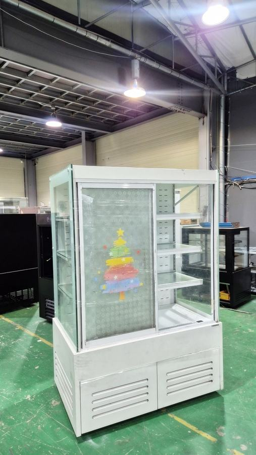
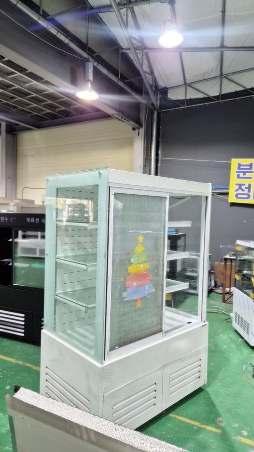
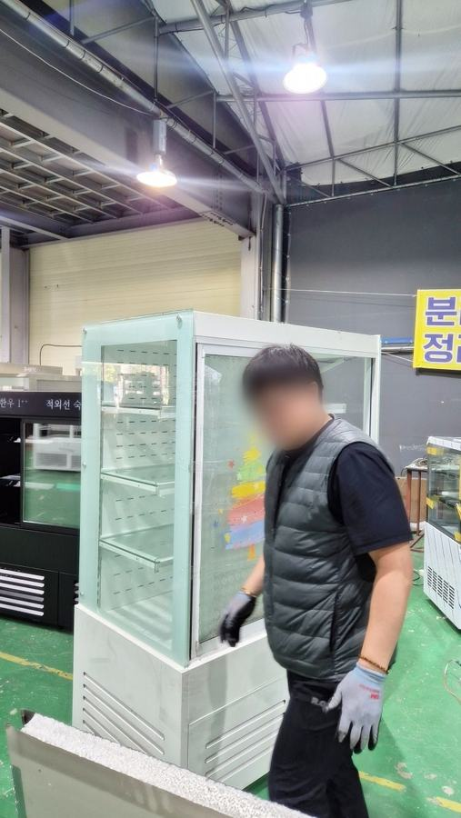
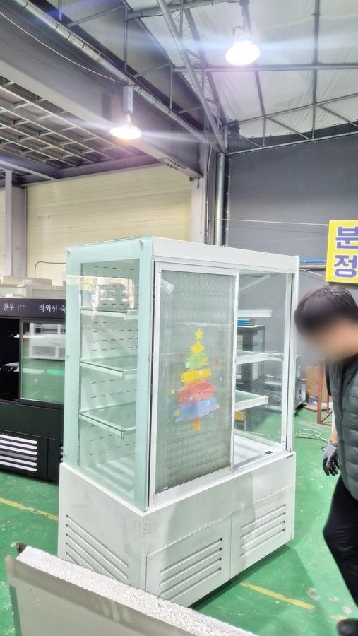
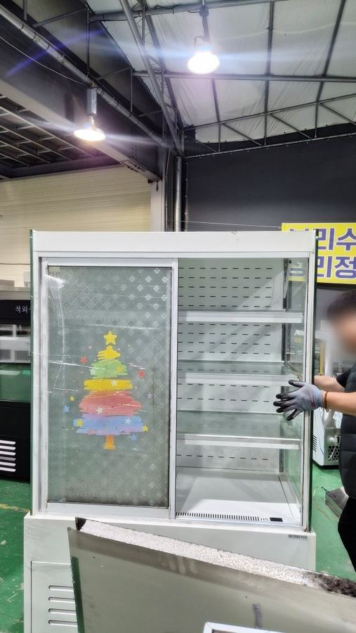
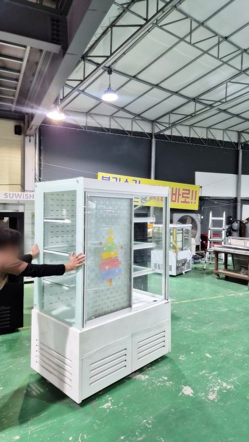
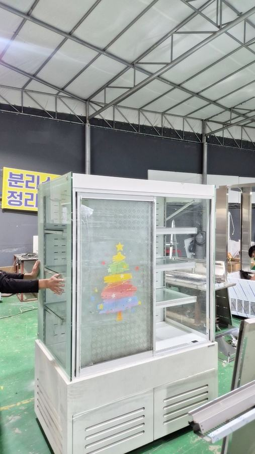
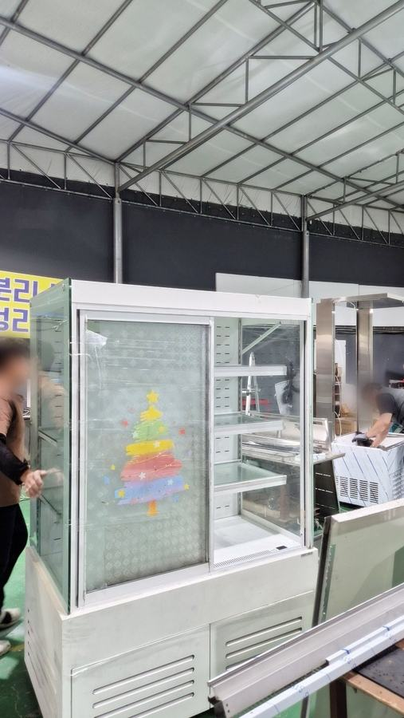

반찬(진열)쇼케이스
반찬쇼케이스 고장, 증상별로 먼저 볼 곳과 접수 요령

반찬쇼케이스가 이상하면 전원·차단기, 통풍구 막힘, 문이나 덮개 틈새처럼 사장님이 바로 볼 수 있는 곳부터 확인하고, 그래도 안 되면 반찬을 옮긴 뒤 증상을 구체적으로 적어 A/S를 접수하는 것이 순서입니다. 사용 연수보다 어느 부분에 문제가 생겼는지가 수리와 교체를 가르는 기준입니다.
안녕하세요. 반찬가게 진열장을 오래 만들어 온 한성쇼케이스입니다.
아침에 가게 문을 열었는데 반찬쇼케이스 안이 미지근하다면 그 순간부터 머릿속이 하얘지시죠. 전날 무쳐 둔 나물, 조림, 젓갈까지 한꺼번에 손해가 될 수 있으니까요.
반찬은 양념과 국물이 있어 냉기가 조금만 약해져도 맛과 색이 금방 변합니다. 그래서 고장이 의심될 때 무엇부터 할지 미리 알아 두시면 피해를 크게 줄일 수 있습니다.
오늘은 증상별로 사장님이 직접 확인할 곳과, 수리 접수할 때 도움이 되는 정보를 정리해 드리겠습니다.
1. 전원이 안 들어오거나 조명만 켜질 때
화면이나 조명이 아예 꺼져 있다면 차단기와 콘센트부터 보세요. 반찬가게는 조리 기구와 같은 회로를 쓰는 경우가 많아, 다른 기기 때문에 차단기가 내려가는 일이 종종 있습니다.
조명은 켜지는데 냉기가 없다면 냉각 쪽 문제일 가능성이 큽니다. 이때는 설정을 여러 번 만지기보다 바로 반찬을 다른 냉장고로 옮기고 접수하시는 편이 안전합니다.
- 차단기가 내려가 있지 않은지 확인하세요.
- 멀티탭 대신 전용 콘센트에 꽂혀 있는지 보세요.
2. 냉기가 약해졌을 때
가장 흔한 원인은 기계실 통풍구가 막힌 경우입니다. 반찬가게는 주방 기름기와 먼지가 섞여 응축기에 쉽게 달라붙고, 이것이 쌓이면 열을 못 빼서 냉기가 약해집니다.
반찬 통을 칸 끝까지 빽빽하게 채우거나 뜨거운 반찬을 식히지 않고 바로 넣는 습관도 내부 온도를 끌어올립니다.
덮개형이나 미닫이문 제품이라면 문이 끝까지 닫히는지, 패킹이 들뜨지 않았는지도 함께 보세요.
반찬쇼케이스는 손님이 고르는 동안 문이나 덮개를 열어 두는 시간이 긴 편입니다. 점심과 저녁 손님이 몰리는 시간에만 냉기가 약하다면 고장보다는 개방 시간이 원인일 수 있으니, 한산한 시간대에도 같은 증상이 있는지 비교해 보세요.
- 기계실 통풍구에 먼지·기름때가 쌓였는지 보세요.
- 조리한 반찬은 충분히 식힌 뒤 넣으세요.
- 문 패킹이 갈라지거나 들뜬 곳이 없는지 눌러 보세요.


3. 성에가 끼거나 바닥에 물이 고일 때
냉각기에 성에가 두껍게 끼면 바람이 막혀 냉기가 고르게 돌지 못합니다. 국물 있는 반찬이 많은 매장은 습기가 많아 이런 증상이 더 잘 생깁니다.
바닥에 물이 고인다면 배수 길이 막혔거나 제상수가 제대로 빠지지 않는 경우가 많습니다. 반찬 국물이 흘러 배수구를 막기도 하니 청소할 때 배수 쪽도 같이 살펴 주세요.
성에가 생겼다고 칼이나 송곳으로 긁어내시면 냉각기 배관이 상할 수 있습니다. 전원을 끄고 자연스럽게 녹이거나 제상 기능을 쓰신 뒤에도 금방 다시 두껍게 낀다면 문 틈새나 부품 이상을 의심하고 점검을 받으시는 편이 좋습니다.
4. A/S 접수할 때 이렇게 말씀해 주세요
"안 시원해요" 한마디보다 언제부터 그랬는지, 하루 종일인지 특정 시간대만인지, 어느 칸이 문제인지를 함께 알려 주시면 기사님이 필요한 부품을 챙겨 갈 수 있습니다.
원인을 직접 찾으실 필요는 없고, 느끼신 변화를 그대로 전해 주시면 됩니다.
제품 옆면의 명판 사진과 구매 시기도 함께 보내 주시면 접수가 빨라집니다. 오래 쓴 제품이라고 문의를 망설이지 마세요.
- 증상이 시작된 시점과 시간대
- 문제가 있는 칸 위치
- 명판 사진과 구매 시기
체크리스트
- 차단기·전용 콘센트 확인
- 기계실 통풍구 먼지와 기름때
- 문 패킹과 덮개 닫힘 상태
- 냉각기 성에와 배수구 막힘
- 반찬 옮긴 뒤 증상 기록해 접수
5년 쓴 쇼케이스 고장, 수리로 이어진 사례
얼마 전 사용한 지 5년이 지난 쇼케이스가 고장 났다는 A/S 의뢰를 받았습니다. 고객님은 무상 기간이 1년인 걸 알고 계셔서, 이렇게 오래 쓴 제품도 수리가 되는지 조심스럽게 물어 오셨습니다.
저희는 수리가 안 될 이유가 없다고 말씀드리고 바로 어느 부분에 문제가 생겼는지부터 확인했습니다. 1년 무상 A/S 기간이 지난 제품은 유상으로 수리하며, 비용과 일정은 상태와 범위에 따라 달라지지만 영업에 지장이 없도록 최대한 빨리 진행해 드렸습니다.
햇수보다 고장 부위를 먼저 보고 수리와 교체를 판단하는 것이 핵심이었습니다.










자주 묻는 질문
오래된 반찬쇼케이스는 고치는 것보다 새로 사는 게 낫나요?
사용 연수만으로는 판단하기 어렵습니다. 같은 시기에 산 제품도 관리와 사용 환경에 따라 상태가 달라서, 어느 부분이 고장 났는지 먼저 확인한 뒤 결정하시는 것이 맞습니다.
무상 A/S 기간이 지났는데도 수리를 받을 수 있나요?
네, 한성쇼케이스 제품은 1년 무상 기간 이후에도 유상으로 수리해 드립니다. 비용과 일정은 고장 범위에 따라 달라 점검 후 안내해 드립니다.
고장 났을 때 반찬은 어떻게 하나요?
냉기가 없다고 판단되면 먼저 반찬을 다른 냉장고나 아이스박스로 옮겨 두세요. 그다음 증상과 시점을 정리해 접수하시면 대응이 빨라집니다.
매장 조건에 맞춰 만드는 한성쇼케이스
원하시는 제품 사진과 설치할 공간 사진만 보내 주셔도 매장에 맞는 구성을 추천해 드립니다.
- 전국 240여 개 A/S 전담 센터 운영
- 본사 대량 자재 매입으로 품질 대비 합리적인 가격
- 유럽제·삼성 냉각 콤프레셔 적용
- 국내 최초 쇼케이스 전문 디자이너 상주
매장 폭과 원하는 진열 구성을 알려 주세요. 실측과 견적을 안내해 드립니다.
031-986-2458